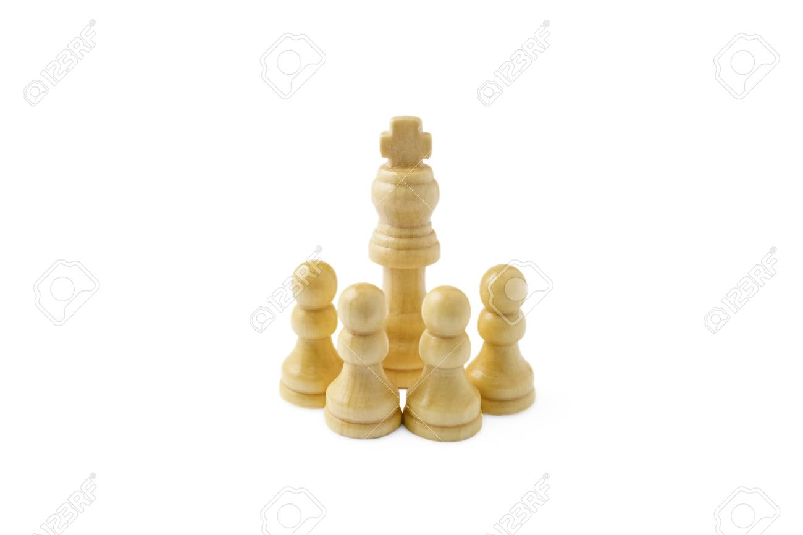

They are artifacts / machines / devices put in orbit intentionally
In 1957 Soviet Union launched the first satellite, the sputnik as a part of technology demonstration mission.

Sputnik 1 was the first artificial Earth satellite. It was launched into an elliptical low Earth orbit by the USSR on 4 October 1957 as part of the Soviet space program. It orbited for three weeks before its batteries died and then orbited silently for two months before it fell back into the atmosphere on 4 January 1958.
sputnik audio signal
Etimology
from latin "satelles, satellitis" used by romans to designate the soldier / guards of the personal escort of a king or emperor.
Orbits
- LEO They are low-orbit satellites at an altitude of 700 to 1400 km and have an orbital period of 80 to 150 minutes.
- MEO Geocentric orbits ranging in altitude from 2,000 km (1,200 mi) – 35,786 km (22,236 mi). Also known as an intermediate circular orbit.
- GEO It is an orbit at a height of 35,786 km above the Earth's equator. It has an orbital period of 24 hours, always staying on the same place on earth.